Develop interactive prototypes with tools such as Sketch, Illustrator and Invision.
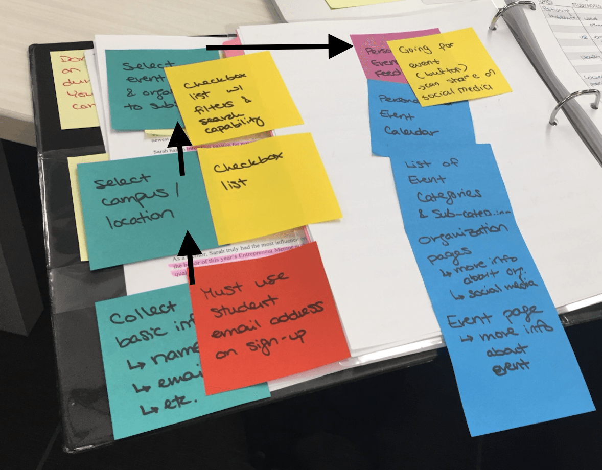 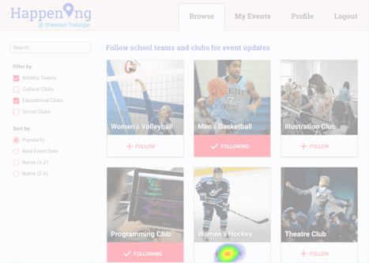
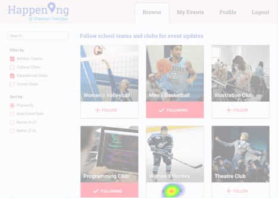
Interactive approach to web design by demonstrating progression.
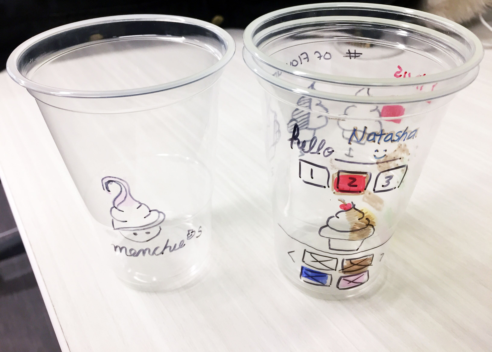 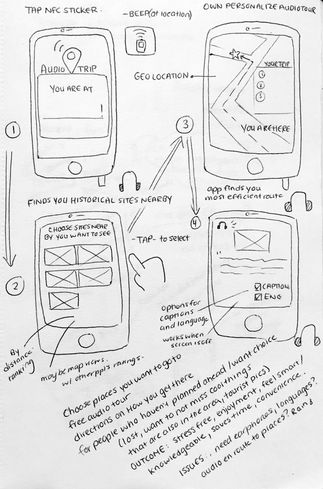The path that users follow as they navigate through the website's interface to complete a task.
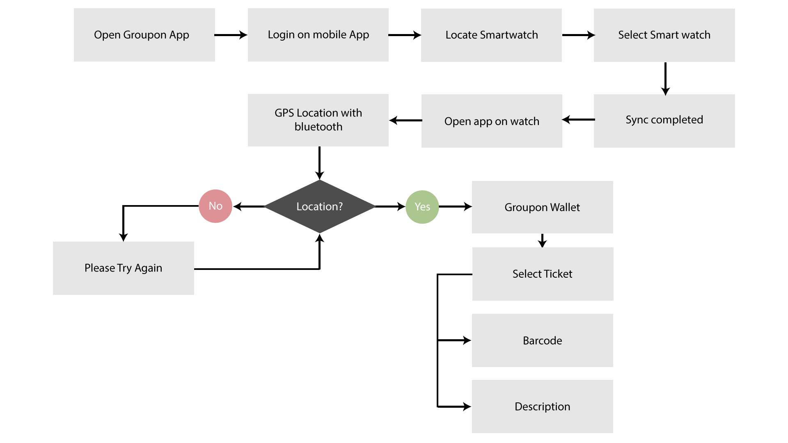Access the environment, behaviour, concerns and aspirations of a user.
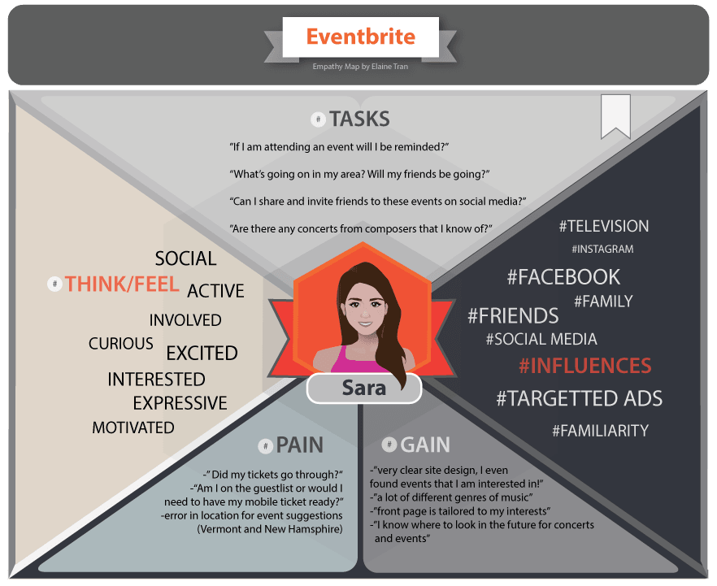A way to model, summarize and communicate research about a group of observed users.
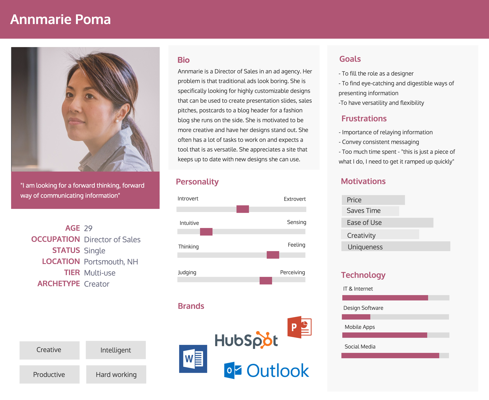Fonts, colours and elements of the user interface to communicate visual brand.
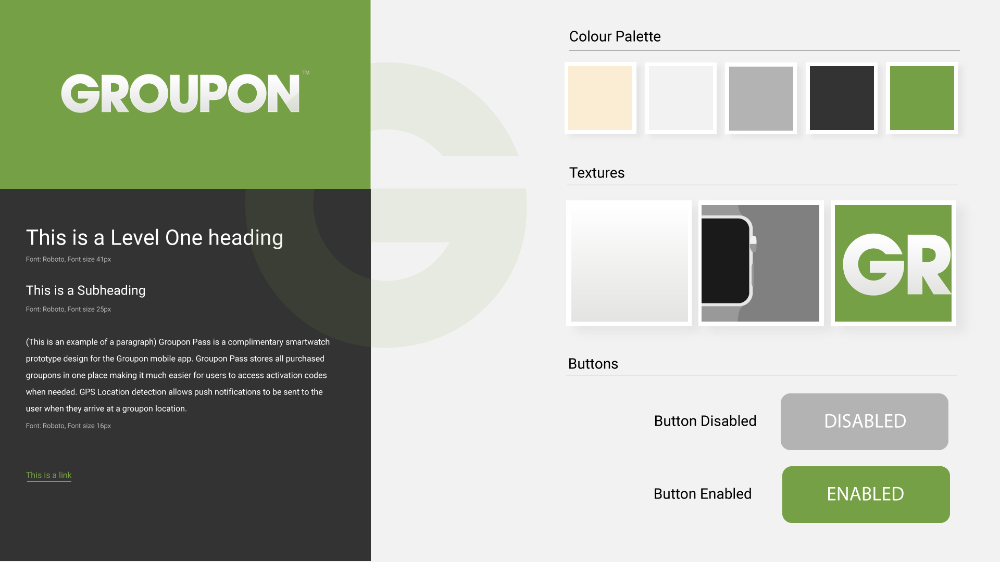 See full PDFAnalysis of user behavior, pain points, motivations, and needs.
 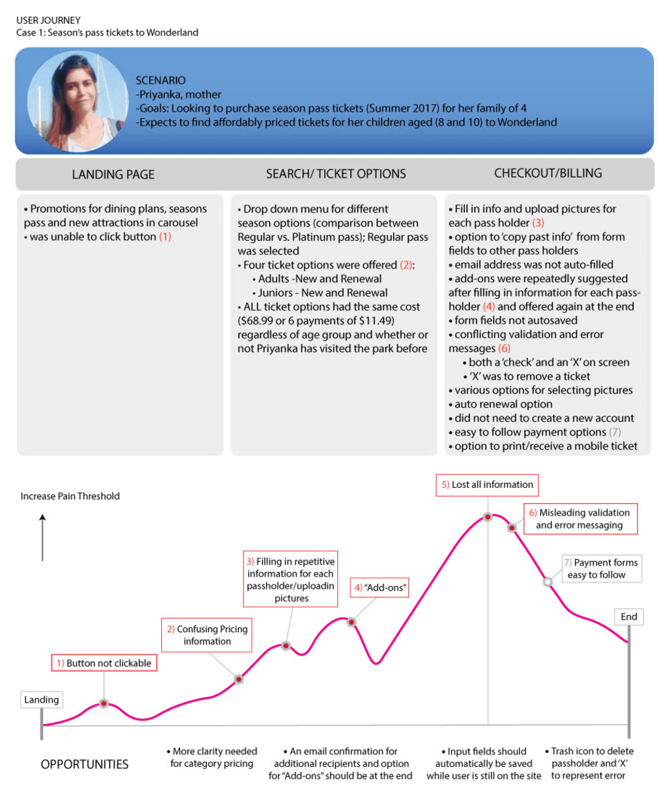
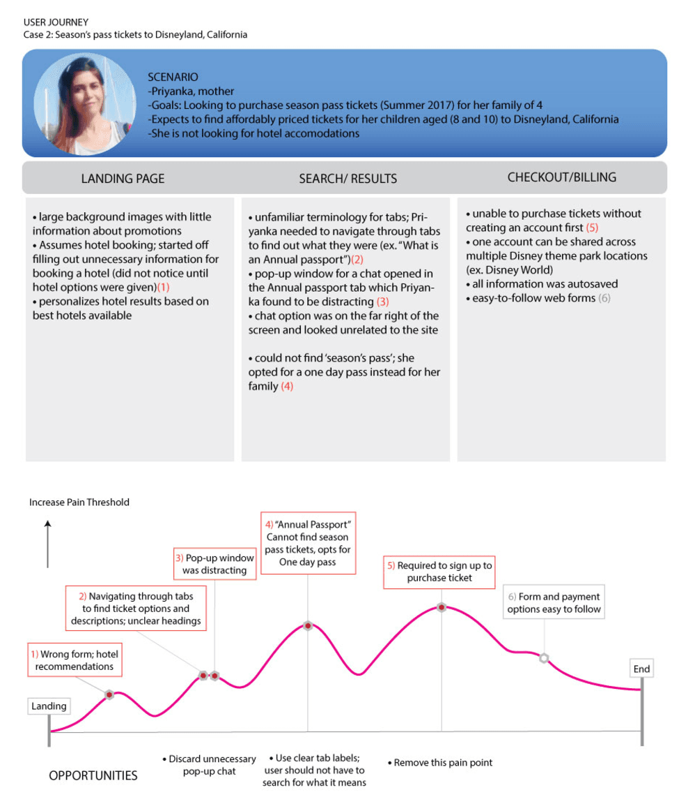
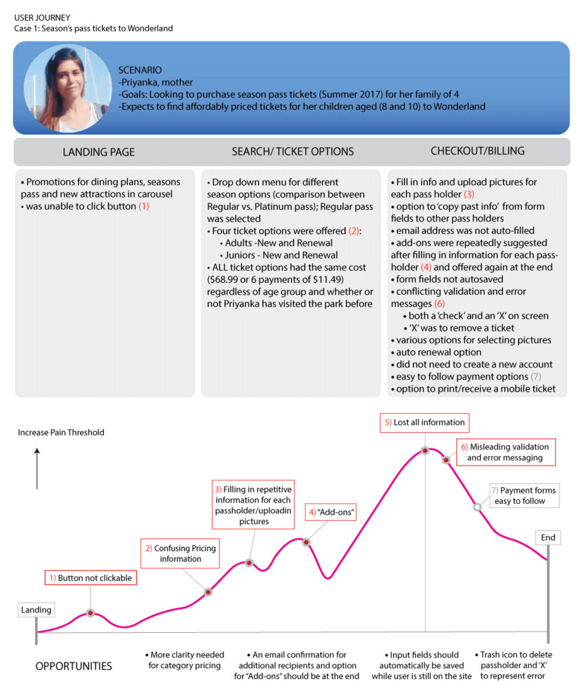
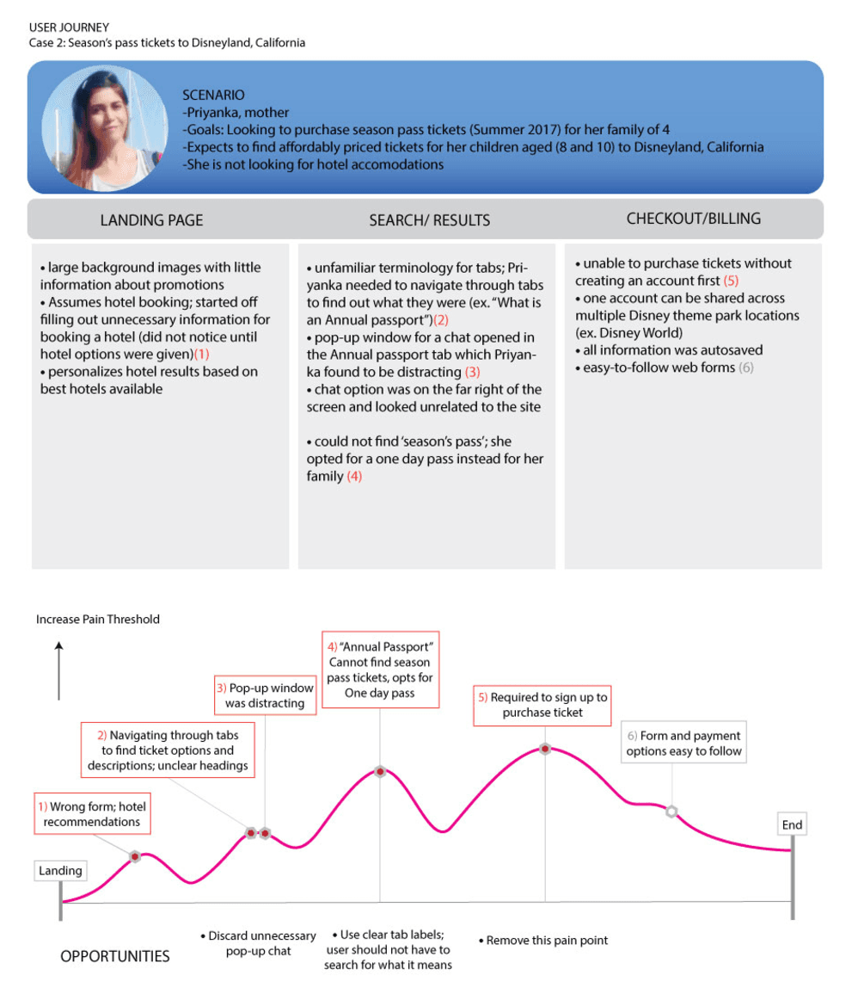
Defines the users' logic; consisting of steps needed to be performed in order to complete a task.
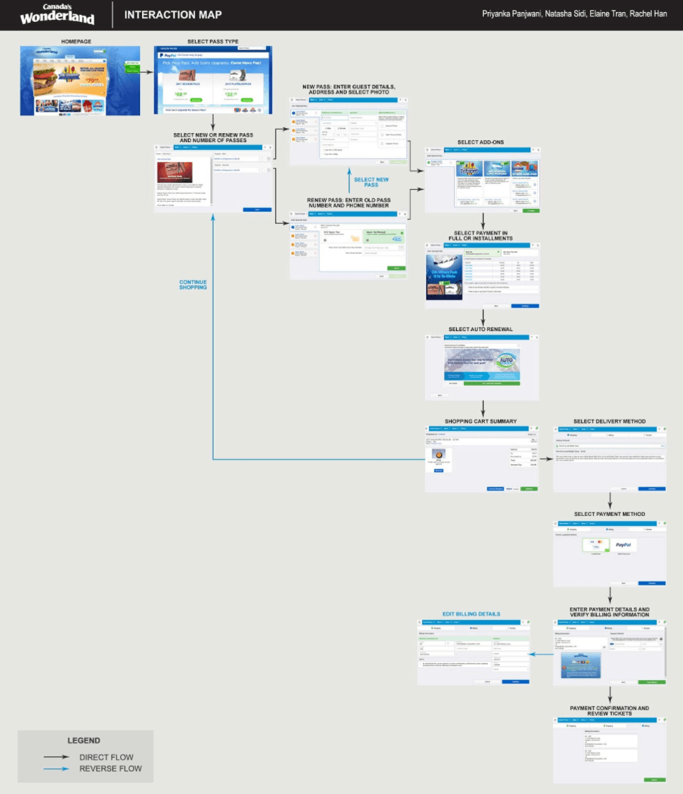Contain interactive elements that accurately represent the final product.
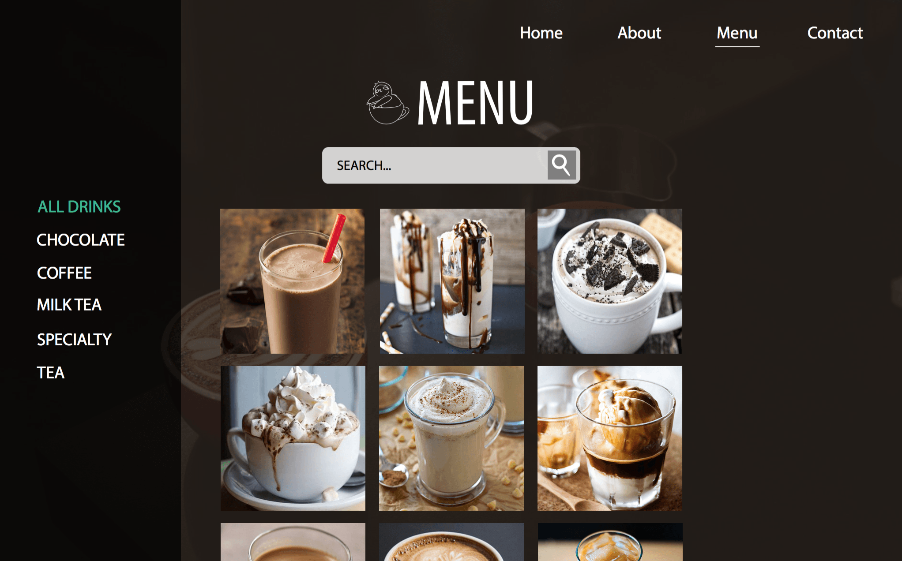